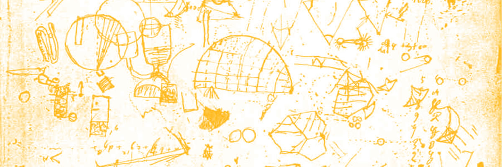

Professor of Computer Science Bridges STEM with the Arts
Posted in Faculty on

As the Edith O’Donnell Arts and Technology Building opens this semester, new faculty members are arriving on campus to further the research and projects taking shape in the recently constructed labs and classrooms.
Dr. Paul Fishwick, who holds dual appointments as the Distinguished Endowed Chair of Arts and Technology and as a professor of computer science, will lead a lab aimed at bringing human elements to the STEM fields (science, technology, engineering and mathematics).
Fishwick builds models that show what abstract concepts and complex equations really represent.
“I am bringing a human interaction to the STEM fields by creating physical representations of mathematical formulas and computer software to help us better understand how these abstract artifacts work,” Fishwick said.
Fishwick’s lab is called the “Creative Automata Lab,” which challenges students to create models to illustrate difficult concepts in science and mathematics.
“Models are common to all disciplines within the University. They are designed and constructed to help us understand a breadth of subjects from extreme weather to business trends. And, creating a model is really an artistic process, so what we’re doing in the lab fully embodies the spirit of the Arts and Technology (ATEC) program,” Fishwick said.
UT Dallas is unique in its ambition to bridge computing and engineering with the arts and humanities. There are a lot of possibilities here.
Dr. Paul Fishwick,
Distinguished Endowed Chair of Arts and Technology and professor of computer science
This semester, Fishwick is teaching a class that is listed as both an arts and technology and computer science course called “Modeling and Simulation.”

“UT Dallas is unique in its ambition to bridge computing and engineering with the arts and humanities. There are a lot of possibilities here,” Fishwick said.
From Industry to Academia
Fishwick has six years of industry experience as a programmer analyst working at Newport News Shipbuilding, as the sole designer, builder and refueler of U.S. Navy aircraft carriers, and as a systems analyst at the NASA Langley Research Center. He served on the faculty at the University of Florida beginning in 1986, and was director of the digital arts and sciences programs there.
Fishwick earned his PhD from the University of Pennsylvania and is a fellow of the Society for Computer Simulation International. He chairs the Association for Computing Machinery Special Interest Group on Simulation and Modeling (ACM SIGSIM), an international organization.